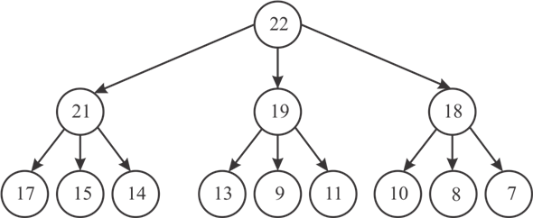

a)
d-array can be represented as general binary heap. The array representation is also same as the array representation of binary heap. In the array representation, three children of a node are stored continuously. The following methods help to access the parent and child nodes in d-array.
// Returns the index the parent of the child located at index i
PARENT(i)
return
// Returns jth child’s index of any parent
CHILD(i ,j)
return
Example:
• Consider a 3-ary heap. The root 22 is located at, as usual, at index 0.
The first, second and third children of 22 are located at index 1, 2 and 3 respectively.
• Similarly children of 21, are located at index 4, 5 and 6.
• So, from this we can say that for any parent i have children at 3*parent_index + 1, 3*parent_index + 2 and 3*parent_index + 3.

• So in general for any d-ary heap the children of parent at index i is at d*parent_index +1, d*parent_index+2……. d*parent_index +d.
• Also, the parent of a node located at index i in 3-ary heap can be found at index floor (i-1/3).
• In general the parent of child that is located at index i, can be found at floor (i-1/d).
b)
• At any level i the number of nodes are d i where d is the level of that heap.
• Consider the height of the tree to be h. Then number of nodes in the heap will be determined as:
(Where n = total number of nodes) …… (1)
• Since, the equation (1) is Geometric Progression so,
Now, apply the formula to calculate the sum of geometric progression:
• Take logarithm on both sides,
Or,
• So,
(By base change property of log)
Hence, the height of a d -ary heap of n elements in terms of n and d is .
c)
The procedure d-ARY-HEAP-EXTRACT-MAX also works similar to HEAP-EXTRACT-MAX and calls d-ARY-MAX-HEAPIFY.
Explanation:
• The d-ARY_EXTRACT_MAX returns the first element in the array. And replaces the first place with the last element in the array.
• Also, it calls d-ARY-MAX-HEAPIFY to maintain the max-heap property.
• In d-ARY-MAX-HEAPIFY, first if condition is used to check the overflow using condition and A[d*i + k]>A[j] is used to check whether max-heap property is followed or not.
• If the above condition is true, it updates the largest value which is holding the index of an element to index of its parent.
• Next if condition is used to check whether the largest value is updated or not. If the largest value is updated, then the parent and the node located at index largest are swapped.
• After that, the program recursively calls d-ARY-MAX-HEAPIFY on largest node, to maintain the max-heap property.
Running-time analysis:
• The running time of this algorithm is because at each depth we are doing d loops, and then recurse to the depth of the tree.
• In function user compare the ith node and each of its children to find max in all of the nodes. Then if the maximum child is greater than its parent swap them and recurse on child.
Therefore, the run time complexity should be
d)
The algorithm given below is used to insert a new node in the heap .The Initial key value of the new node is initialized to .
• Since it is the lowest value possible it is inserted at the end of the heap and the heapSize is increased by 1.
• Now this new node is to be updated with its required key value , for which it uses the INCREASE-KEY(A ,i ,key) method that is described in the part (e)
Running-time analysis:
• Running time complexity depends upon the INCREASE-KEY(A, A.heapSize ,key) method. Since, in the worst case, this method traverses the full height of the tree that is from leaf node to the root.
• Since, the height of d-ary heap as discussed above is
So, the complexity is 
e)
First the method checks whether the input number is greater or not .If not then there is no need to change in heap .Otherwise insert the input value into the node.
The algorithm for the same is described below:
Running time analysis:
• Since it may be possible to have the index of child is at bottom, then in the worst case the Algorithm traverses the full height of the tree that is ,
Therefore the run time complexity is